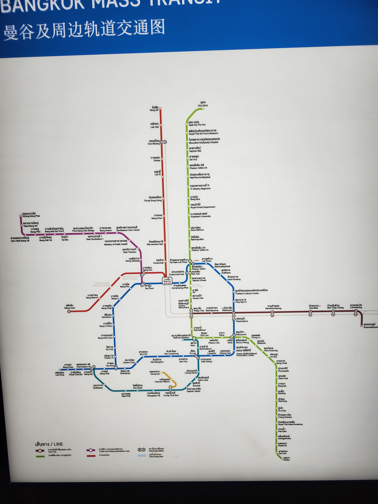
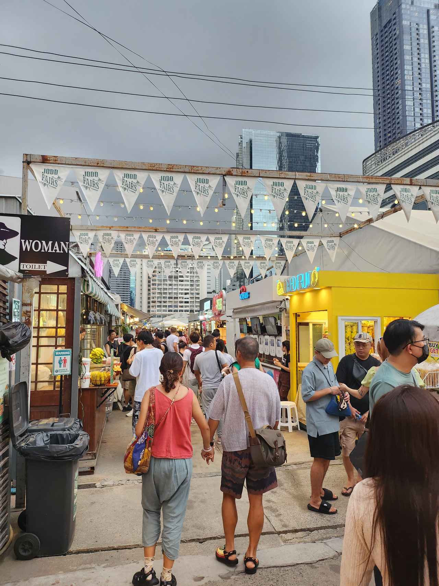
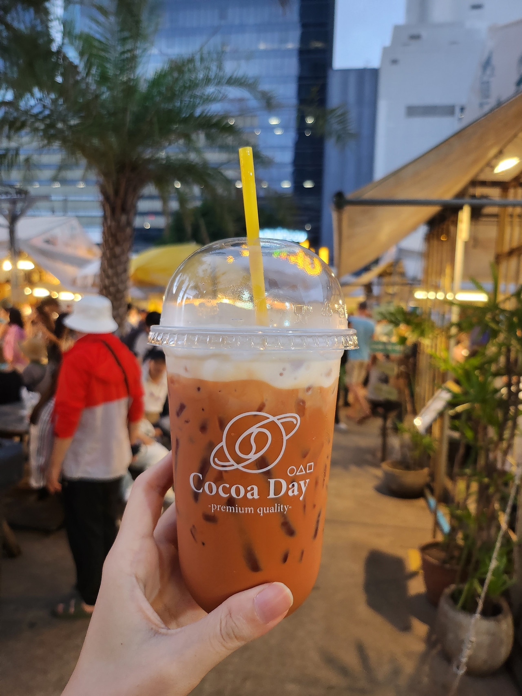
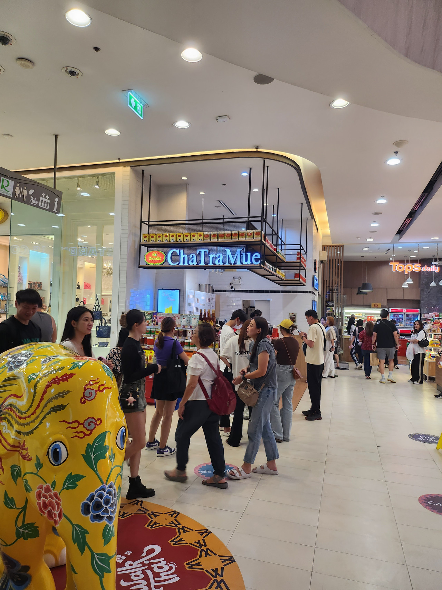
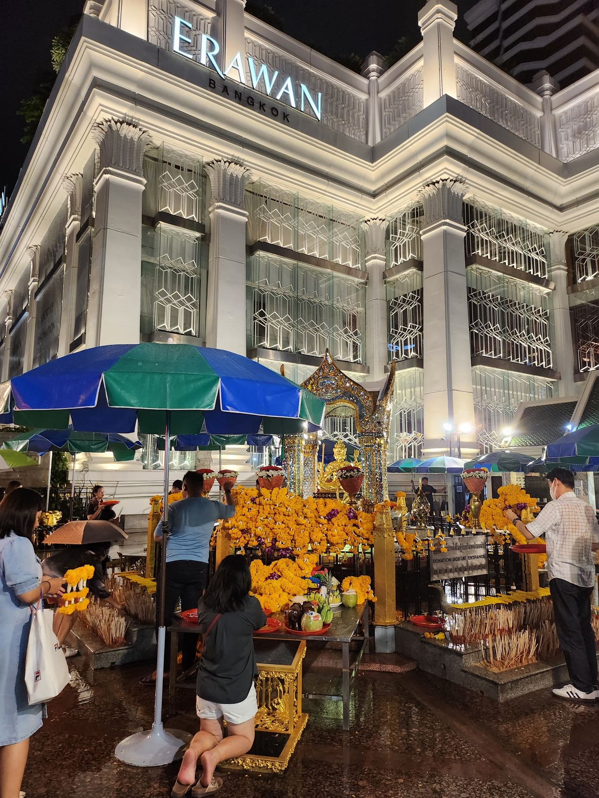
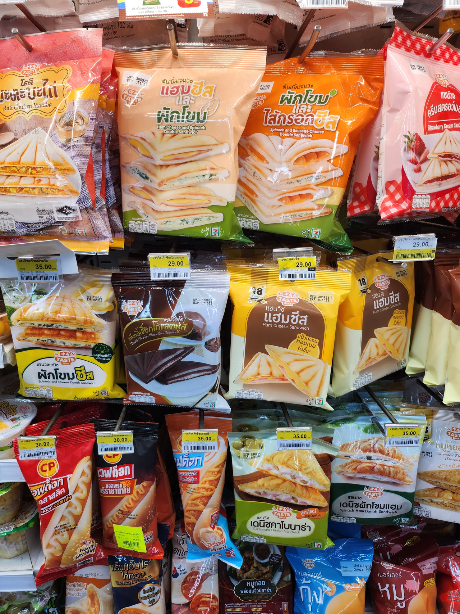

COVID-19 疫情解封後終於出國啦，這次和老姐二人去泰國自由行十天九夜(2023/9/30~2023/10/9)，去了曼谷、曼谷近郊、北碧府和芭達雅。
實在覺得泰國有點太好玩了，只能說待十天根本不夠啊，下次想去數位遊牧久待一下，甚至在查怎麼移民泰國、看台灣人在泰國置產的心得，趁現在還算記憶猶新的時候簡單來記錄一下這十天九夜的清單XD
行前準備
在出發之前，主要先做了以下準備：
- 辦泰國簽證
- 規劃行程大致的架構
- 找住宿
- 買泰國手機 SIM 卡
- 買兔子卡
1. 辦理泰國簽證
簽證可以自己到泰國貿易經濟辦事處辦(NT$1200)，或是多花幾百塊請旅行社跑腿去辦。
由於家姐人就在台北，且考慮到個資問題，所以我們選擇自己辦，這次我們申請的是「單次觀光簽證」，下載簽證申請表，填寫完成後，在指定的辦公時間到台北的泰國貿易經濟辦事處辦理，沒問題的話早上遞交，當天下午就可以拿到簽證。
2. 規劃行程大致的架構
網路上有許多的旅遊文章和 Youtube 影片可以參考，臉書上也有不少泰國自由行的社團可以加，可以看看哪些點是自己有興趣的。至少先大致規劃行程的架構，例如哪幾天要待在什麼區，過程中是不是需要遷移換落腳的住宿，以及大點和大點之間可以怎麼移動(app叫車/包車/各種大眾運輸)，其他細節我們就是前一天要睡之前在飯店 google，或是當天邊走邊查。不過各景點最好都先查一下營業時間，有些景點是假日才有營業！
我自己的做法是先把想去的地點都先無腦標在地圖上，標完之後，其實從地圖上就可以看出哪幾天要住在哪一區比較好、哪些點是順路的可以同一天去、哪些點較遠可能需要遷移換住宿。我們每個行程之間的時間都抓得蠻鬆的，好處就是幾乎每天都睡到 9、10 點才起床，且路上可能臨時看到想去的地方也可以安排去，不需要一直趕行程。
3. 找落腳的住宿
做完 2.的規劃行程大致的架構之後，大概就能知道之後住宿要找哪一區比較好，如果都是在曼谷市區活動，當然是選附近有 BTS/MRT 的最方便。不過我們出發前並沒有訂完所有的住宿，因為有保留了一些行程上要調整的彈性，所以有二~三天的住宿我們是到了泰國後才訂的，但至少要先訂好第一個晚上的住宿，因申請泰國簽證的文件要填寫。
我們是用 Booking.com 訂住宿，建議用 app 版的，因有發現一樣的住宿，app 版的 Booking.com 價錢居然有時比網頁版的便宜。
4. 泰國手機 SIM 卡
我們是先在蝦皮買好 SIM 卡然後帶去泰國，因為想要飛機一落地就有網路可以用，SIM 卡到泰國機場或是泰國便利商店再買也是可以。我們買的是 Truemove H 電信的 10 天 50G，NT$229，蠻佛的是如果是在瀏覽某些特定的平台，像是 FaceBook、Instagram、Line…等，泰國電信是不會把這些流量計算進去的，所以不用擔心不夠用。
5. 兔子卡
兔子卡可以在泰國搭 BTS (MRT 和機場快線不適用)，用兔子卡搭 BTS 並沒有比較便宜，但是遇到人很多時，可以省去排隊買票的時間。
我們是出發的前一天，先在 klook 買好兔子卡，下飛機後，在機場的 klook 櫃可以領兔子卡，打開訂單給服務人員看，會拿到一張兔子卡和二張 ฿100 元的加值券(共 ฿200)，要注意的是要加值要到 BTS 站的服務台才行，因兔子卡不適用 MRT 和機場快線。
Day1
第一天的行程：
- 下午三點左右抵達泰國素萬那普(BKK)機場
- 換上從台灣帶來的泰國 SIM 卡
- 在機場領兔子卡
- 先在機場換一點點泰銖
- 搭機場快線到飯店(Phaya Thai 站)
- 喬德夜市
- 四面佛
- 逛泰國 7-11
抵達泰國 BKK 機場
我們大概下午三點左右抵達素萬那普(BKK)機場，立馬先換上從台灣帶來的泰國 SIM 卡，換上後，會收到簡訊告知這張卡的電話號碼，然後確認可以正常上網，這個電話號碼之後就能用來綁定 Grab/Bolt 等等的叫車 app，如果要訂位餐廳也用得上，有少數飯店或是換匯時，也會要求填寫電話。
然後在 BKK 機場 4 樓出境大廳第 K 排 KBank 旁的 klook 櫃領兔子卡，再到 B1 先換一點點泰銖，因機場的匯率會比較差(相同台幣換到的泰銖較少)，所以我們主要是換夠搭機場快線和吃晚餐要用的泰銖。
然後就出發前往我們住宿的地方，我們找的住宿 Anajak bangkok hotel 就在機場快線的終點站 Phaya Thai，從素萬那普機場(suvarnabhumi 站)到 Phaya Thai 站的票是 ฿45，大概 30 分鐘車程，可以用機器買票，機器右上角有英文/泰文可以切換。


喬德夜市
放完行李後在飯店耍廢了一下就搭 BTS & MRT 來到喬德夜市！

本來想說吃看看火山排骨，結果看到菜單上有手抓海鮮，就變心了
點了一個手抓海鮮 ฿890 左右，因為我們剛好坐在夜市走道邊的位置，上菜時，旁邊剛好有路過一群中國團的叔叔阿姨們，他們看到這盤一直湊過來輪流要跟這盤海鮮拍照XD
不過好不好吃已經不記得了，只記得蠻辣的，吃到最後嘴唇腫腫的XD

本來打算大開殺戒，結果吃了手抓海鮮和一杯泰奶後飽到不行，且在機場換的一點點泰銖快花完了，加上突然下起雨，所以就跑到旁邊像百貨公司的購物商場裡找 super rich 換泰銖順便晃晃。

先前看網路鄉民的分享，對喬德夜市的評價都是蠻兩極的，不過還是想自己走一趟看看，現在回想起來，整體環境是蠻乾淨的，氛圍也算舒服，但價錢似乎蠻觀光客的，而且到底為何逛了一大圈一直看到各種火山排骨的店拉😵💫，除此之外，現在回想起來好像沒有其他印象深刻的特點XD
四面佛
從喬德夜市搭 BTS & MRT 到四面佛(Chit Lom 站)。四面佛旁邊有在賣一套一套的香、菊花和蠟燭，有 ฿50、฿100… 其他更高價位的可以選擇。
因為下雨沒有什麼人，我們各自買了 ฿50 的小套餐但不知怎麼拜就現場 google XD
旁邊有看到舞團在跳舞蹈表演，應該是人家還願請來的，就像台灣的廟前面也會有歌仔戲和布袋戲(?)

拜完後發現旁邊居然是中央世界購物中心(Central World)，但時間有點晚了，就沒有走進去逛 (但後面幾天又跑來逛XD)
泰國 7-11
在泰國的自來水即使煮過也是不能喝的，所以回飯店時，去附近 7-11 要買礦泉水，發現雖然泰國的 7-11 裝潢沒有台灣的那麼浮誇，但是東西好便宜而且很好逛，我們在 711 裡面逛超久，結帳時發現泰國 7-11 消費要高於 ฿200 結帳才可以刷信用卡。
我愛的可樂在泰國才 ฿19，換算成台幣大概 NT$17，不過有些進口的巧克力價錢就跟台灣賣的差不多
買了熱壓吐司、洋芋片(泰國限定口味)、沒看過的飲料當宵夜，好吃 CP 值很高，讚讚~


洗洗睡，下集待續…